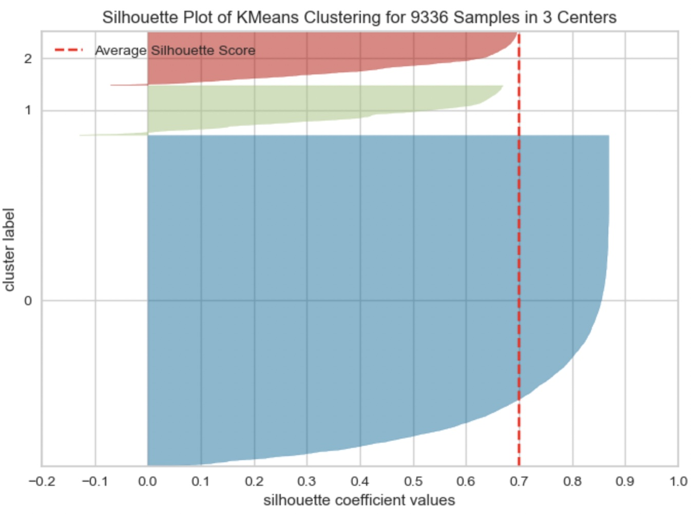
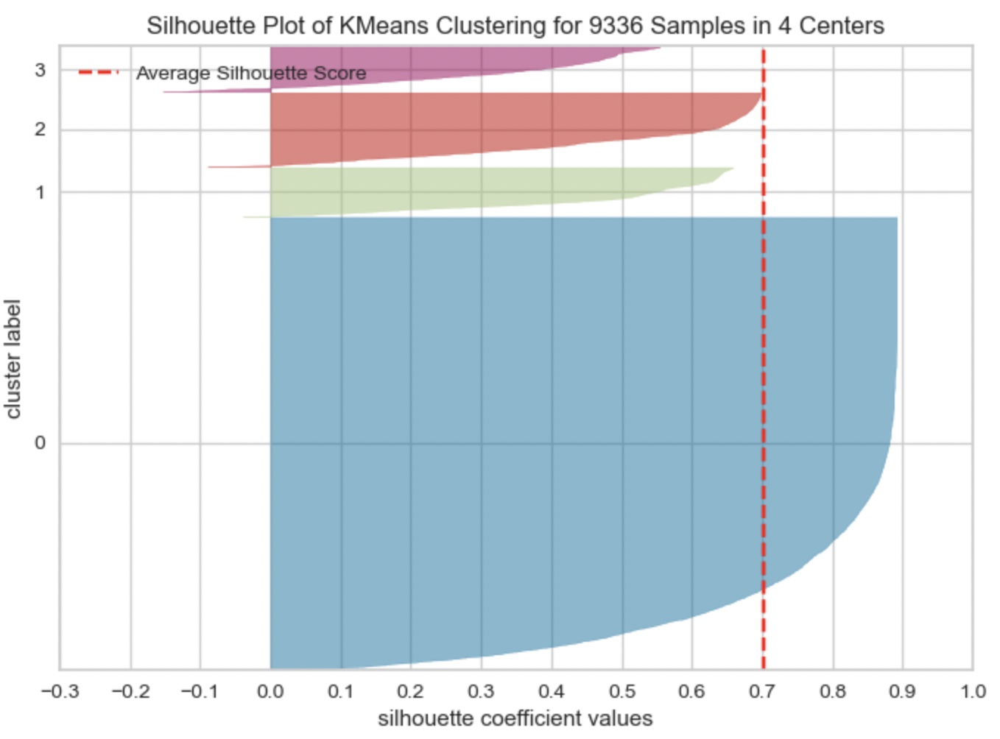

Clustering is a technique used in machine learning and data analysis to group similar data points together based on their characteristics or features. Clustering algorithms partition the data into subsets or clusters, such that the data points within each cluster are more similar to each other than to those in other clusters. There are two main types of clustering algorithms: partitional and hierarchical.
Partitional clustering involves dividing the data into a fixed number of clusters, with each data point belonging to exactly one cluster. Popular partitional clustering algorithms include k-means, which partitions the data into k clusters by minimizing the sum of squared distances between data points and their cluster centers, and Gaussian Mixture Models (GMMs), which model the data as a mixture of Gaussians and use an Expectation-Maximization algorithm to estimate the parameters of the Gaussians.
Hierarchical clustering involves building a tree-like structure, called a dendrogram, that shows how the data can be progressively divided into smaller clusters. There are two main types of hierarchical clustering algorithms: agglomerative and divisive. Agglomerative clustering starts with each data point as its own cluster and merges the closest pairs of clusters iteratively until a stopping criterion is met, whereas divisive clustering starts with all data points in one cluster and recursively divides the data into smaller clusters.
In the context of clustering greenhouse gas (GHG) pollutants, the choice of distance metric can have a significant impact on the clustering results. Here are some distance metrics that are commonly used in clustering GHG pollutant data: Canberra distance: This distance metric is similar to the Manhattan distance but weights each variable by its magnitude. In the context of GHG pollutant data, this metric can be used to measure the distance between countries or regions based on their emissions of different GHG pollutants, with greater weight given to pollutants that have a higher overall magnitude.
- Euclidean distance: This is a common distance metric used in clustering and measures the straight-line distance between two points in n-dimensional space. For GHG pollutant data, this metric can be used to measure the distance between two countries or regions based on their emissions of different GHG pollutants.
- Mahalanobis distance: This is a more advanced distance metric that takes into account the correlation between different variables in the data. In the context of GHG pollutant data, this metric can be used to measure the distance between countries or regions based on their emissions of different GHG pollutants while accounting for the correlation between them.
- Cosine similarity: This distance metric is commonly used in text mining and natural language processing but can also be used in clustering GHG pollutant data. The cosine similarity measures the cosine of the angle between two vectors and is useful when comparing the similarity of two vectors with different magnitudes. In the context of GHG pollutant data, this metric can be used to measure the similarity between countries or regions based on their relative contributions of different GHG pollutants to total emissions.
The choice of distance metric will depend on the specific characteristics of the GHG pollutant data and the goals of the clustering analysis. It is important to choose a distance metric that is appropriate for the data and can effectively capture the underlying patterns and relationships in the data.
Data Gathering:
- Used Clustering data: cluster_datav2.csv
Link to the dataset: Dataset
Link to HClust code: Hierarchical Clustering
Link to the Python code: Code
The dataset include numeric values that is pollutants emissions of Carbondioxide, Methane, FGas and Nitrogen oxide with the additional column called Risk factor rated from 1 to 3 based on the emissions from the pollutants
Hierarchical clustering is another commonly used clustering algorithm that can be applied to greenhouse gas (GHG) pollutant emissions data. Unlike k-means clustering, hierarchical clustering does not require the number of clusters to be pre-determined, and instead creates a tree-like structure called a dendrogram that shows the hierarchical relationships between clusters.
K-means clustering is a commonly used partitional clustering algorithm that can be applied to greenhouse gas (GHG) pollutant emissions data. The goal of k-means clustering is to partition the data into k clusters based on the similarity of the emissions data for each country or region.
Hierarchical Clustering
The resulting clusters can be analyzed in the same way as the clusters obtained from k-means clustering to identify patterns and relationships in the GHG pollutant emissions data. However, since hierarchical clustering creates a dendrogram that shows the hierarchical relationships between clusters, it can be particularly useful for identifying sub-groups or clusters of countries or regions that are similar at different levels of granularity.
Dendrogram using Cosine similarity and H Clust with 3 clusters
Choosing K
The elbow method and silhouette method are two common techniques used for determining the optimal number of clusters in a dataset. While these techniques are generally used for clustering analysis, they can also be applied to GHG emissions data to identify potential groupings or patterns in the data.
In GHG emissions data, the silhouette method can be used to identify the optimal number of clusters or groups that maximize the similarity of emissions data within each group while minimizing the similarity of emissions data between groups. This can be useful for identifying potential patterns or relationships between emissions data across different industries, regions, or sectors.Elbow method and silhouette methode to analyse the number of clusters to show
Following Graphs shows the silhouette scores for k=2,3,4
If we clustered the GHG emissions data into 2 groups, we would calculate the silhouette coefficient for each data point and calculate the average silhouette coefficient for each group. We would then repeat this process for k=3 and k=4, and compare the average silhouette coefficients for each group configuration to identify the optimal number of clusters.
By comparing the average silhouette coefficients for k=2, 3, 4, and 5, we can identify the optimal number of clusters that maximizes the similarity of emissions data within each cluster and minimizes the similarity of emissions data between clusters.

Conclusion
From the elbow method and silhouette score, we see in elbow method the optimal number of clusters are 2, whereas in silhouette method, silhouette score for k=2 is 71 % , k=3 is 69.99 and k=5 is 70
As the optimal number of clusters may vary depending on the specific dataset and the number of iterations we perform, it's important to use a combination of techniques, including the elbow method, silhouette score, and domain knowledge, to determine the optimal number of clusters for a given dataset. Additionally, it's important to carefully interpret the results of cluster analysis and use the insights gained to inform strategies to reduce GHG emissions. Hence based on the silhouette score, we can say the optimal number of cluster is 2.
For k=2, shows how the clusters are formed and centroids are placed
For k=3, shows how the clusters are formed and centroids are placed
For k=5, shows how the clusters are formed and centroids are placed